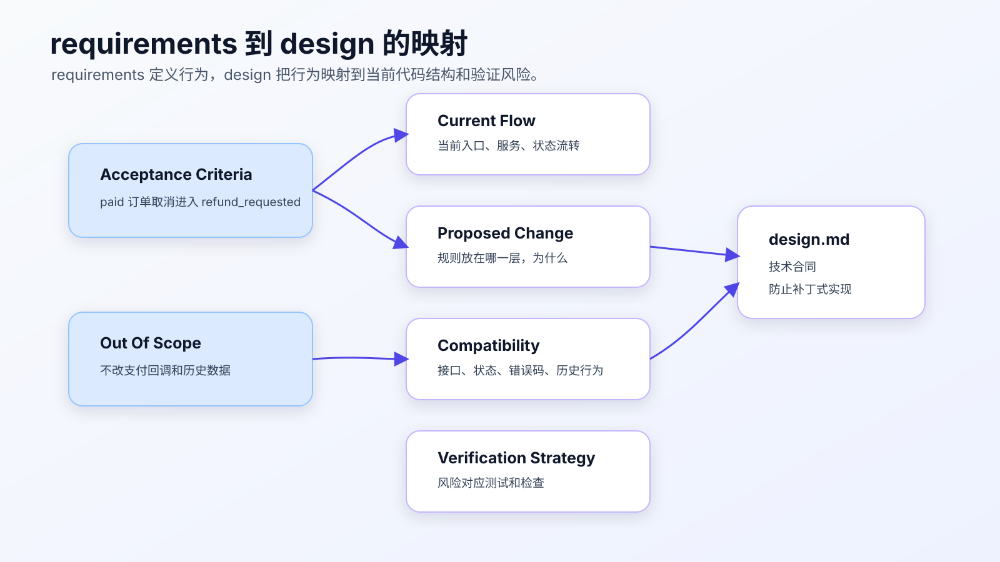
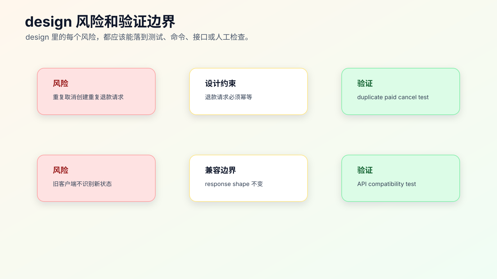

design.md 怎么写，AI 才不会补丁式开发
requirements.md 写清楚“要什么”之后，不能直接让 AI 开始改。
复杂需求真正危险的地方，往往在“怎么改”。
同一个需求：
已支付订单不能直接取消，要走退款。
可以有很多实现方式：
- 在 controller 里加一个 paid 判断。
- 在 service 里改状态机。
- 在订单领域层新增状态迁移规则。
- 在退款模块创建 refund request。
- 在接口层保持响应结构不变。
- 在前端根据新状态展示退款处理中。
如果不先写 design.md，Agent 很可能选择最容易落地的方式：在它最先看到的函数里加一个判断。这个改动可能能让测试通过，但会把业务规则散落在错误层级里。
design.md 的价值，是把 requirements 映射到当前代码结构，提前说明方案边界、兼容性、数据流、风险和验证策略。

design 不是架构长文
很多 design 文档写失败，是因为它变成了架构作文。
好的 design.md 不需要长。它要回答七个问题：
- 当前系统怎么做。
- 这次改哪里。
- 为什么改这里。
- 哪些地方不改。
- 数据和状态怎么流转。
- 兼容性风险是什么。
- 怎么验证设计成立。
它不需要写愿景，不需要写大而全架构，不需要复述 requirements。
requirements.md 是行为合同。
design.md 是技术合同。
它们之间的边界要清楚。
一个坏的 design 长什么样
坏版本：
# Design
我们需要优化订单取消逻辑，让系统更加合理。
实现时在取消订单的地方判断 paid，如果已支付就走退款。
同时顺便整理订单状态相关代码。
这段 design 有几个问题。
第一，目标太虚。
第二，没有说当前逻辑在哪里。
第三，没有说明为什么在那个地方改。
第四，“顺便整理”扩大了范围。
第五，没有兼容性说明。
第六，没有验证策略。
更好的版本：
# Design
## Current Flow
`OrderCancelService.cancel()` currently handles pending and paid orders in the same cancellation branch.
## Proposed Change
Move paid-order handling into the order status transition layer:
- pending -> canceled
- paid -> refund_requested
- shipped -> existing rejection path
`OrderCancelService` should call `RefundRequestService.create()` only after the transition layer returns `refund_requested`.
## Non-goals
- Do not change payment provider callback handling.
- Do not change public API response shape.
- Do not migrate historical order data.
## Compatibility
Existing clients should continue receiving the same response shape. Only `status` may differ for paid order cancellation.
## Verification
- focused order cancel tests
- response shape compatibility test
- duplicate paid cancel test
这份 design 才能约束 AI 不要补丁式开发。
design 的核心：把规则放到正确层级
AI 最常见的补丁式开发，是把规则加在最容易改的地方。
比如：
if (order.status === 'paid') {
return { status: 'refund_requested' };
}
如果这段逻辑加在 controller 里，可能看起来能跑，但真实问题是：订单状态流转规则被写进接口层了。后面后台任务、管理端、批处理入口可能绕过它。
design.md 必须回答：这个规则应该属于哪一层。
可以这样写：
## Design Decision
Paid-order cancellation is a status transition rule, not a controller rule.
Therefore:
- controller keeps request/response handling only
- service orchestrates cancel flow
- status transition module owns allowed transitions
- refund module owns refund request creation
这段话能阻止 Agent 把业务规则随手塞进 controller。
Current Flow 要带证据，不要只写结论
设计文档里最容易被忽略的部分是 Current Flow。很多失败的 design 不是方案写错，而是它建立在错误的当前理解上。
可以让 Agent 先生成一张证据表：
## Current Flow Evidence
| Claim | Evidence |
| --- | --- |
| Buyer cancel request enters order controller | `src/order/order-controller.ts` |
| Cancel service loads order and checks status | `src/order/order-cancel-service.ts` |
| pending and paid currently share cancel branch | `src/order/order-cancel-service.ts` |
| shipped cancellation returns existing error | `test/order/cancel.test.ts` |
| refund request service already exists | `src/refund/refund-request-service.ts` |
这张表不是为了贴路径，而是为了防止 design 凭想象写。
如果 Agent 找不到证据，就要停下来继续搜索，或者把结论写成假设：
Assumption:
- No dedicated status transition module was found.
Needs verification:
- Search generated order client and admin cancel path before implementation.
假设和事实必须分开。AI Coding 里很多误改，都是因为 Agent 把“我没看到”当成“项目没有”。
一份 design 的推荐结构
# Design: <change name>
## Current Flow
当前代码怎么运行，入口在哪里，关键逻辑在哪。
## Proposed Change
这次准备怎么改，改在哪一层，为什么。
## Data / State Flow
数据、状态、事件或请求如何流转。
## Compatibility
哪些接口、字段、状态、错误码、历史行为必须保持。
## Non-goals
明确不做什么。
## Risks
可能出错的地方和需要验证的边界。
## Verification Strategy
需要哪些测试、命令、页面路径或人工检查。
你可以按任务删减。关键是保留 Current Flow、Proposed Change、Non-goals、Verification。
Current Flow 怎么写
Current Flow 不是复述代码。它只写和需求相关的当前行为。
## Current Flow
- `OrderController.cancel()` receives cancel request and calls `OrderCancelService.cancel()`.
- `OrderCancelService.cancel()` loads order and checks current status.
- pending and paid orders currently enter the same `cancelOrder()` branch.
- shipped orders are rejected with existing `ORDER_ALREADY_SHIPPED` error.
注意这里没有贴代码。
它写的是调用链和行为边界。
Current Flow 要基于真实源码和搜索结果，不要凭想象。可以要求 Agent：
先不要写 design。
请读取相关入口、实现和测试，先输出 Current Flow。
每条都要带文件路径。
如果 Agent 写不出 Current Flow，就不能进入 Proposed Change。
Proposed Change 怎么写
Proposed Change 要说明改动位置和理由。
## Proposed Change
Add an explicit paid-order transition in `OrderStatusTransition`:
- pending -> canceled
- paid -> refund_requested
- shipped -> rejected with existing behavior
`OrderCancelService` will use the transition result to decide whether to call `RefundRequestService.create()`.
Reason:
- status transition rules should stay in one module
- controller response shape can remain stable
- refund creation can be tested independently
这里有三个关键信息：
- 改哪里。
- 怎么改。
- 为什么不是改别处。
“为什么不是改别处”很重要。它能减少 AI 选择近路。
Data / State Flow 怎么写
涉及状态、数据、事件的需求，必须写流转。
## State Flow
pending cancel:
buyer cancel -> status transition -> canceled
paid cancel:
buyer cancel -> status transition -> refund_requested -> create refund request
shipped cancel:
buyer cancel -> status transition -> reject with existing shipped error
如果是前后端需求，可以写请求流：
## Request Flow
ProfileForm submit
-> API client
-> request wrapper handles 401
-> refresh token
-> retry original submit once
-> return submit result to form
这类流转图会直接影响实现。Agent 如果跳过流转，容易只修一个入口。
多入口需求要先画入口表
很多线上系统不是一个按钮对应一个后端函数。订单取消可能有用户端、客服后台、定时任务、批处理、开放接口。只改一个入口，很容易留下绕过路径。
design 里可以先列入口表：
## Entry Points
| Entry | In Scope | Expected Behavior |
| --- | --- | --- |
| buyer order detail cancel | yes | paid -> refund_requested |
| buyer order list cancel | yes | same as detail page |
| support admin cancel | no | unchanged |
| scheduled cleanup job | no | unchanged |
| public partner API cancel | needs confirmation | do not change before confirmation |
这张表能直接影响方案。
如果用户端有两个入口，都走同一个 service，方案可以放在 service 或状态层。 如果客服后台不在范围内，但共享同一个 service，就要确认改动会不会影响后台。 如果 partner API 也会调用同一逻辑，但业务规则未确认，就应该写到 Open Questions 或 Stop 条件。
Agent 做代码搜索时，也要围绕入口表搜索，而不是只搜第一个命中的 cancel。
Compatibility 怎么写
兼容性是 design 里最容易被 AI 忽略的部分。
要明确：
- public API response shape 是否变。
- error code 是否变。
- 状态值是否新增。
- 老客户端是否能识别。
- 历史数据是否需要迁移。
- 旧测试是否保留。
例如：
## Compatibility
- Public response shape remains unchanged.
- Existing shipped-order error code remains unchanged.
- New status value `refund_requested` may be returned for paid cancellation.
- No historical data migration in this change.
- Existing pending cancellation behavior remains unchanged.
如果新增状态值本身就是兼容性风险，要写：
## Compatibility Risk
Some clients may assume cancel success always returns `canceled`.
Need response-shape compatibility test and frontend display check for `refund_requested`.
这能提醒 tasks 里补测试。
方案选择要写出取舍，不是让 AI 投票
复杂需求通常不止一种实现方案。design.md 不需要把每种方案写成论文，但要说明为什么选当前方案。
比如订单取消改退款，至少有三种做法。
| 方案 | 优点 | 风险 | 结论 |
|---|---|---|---|
| controller 里判断 paid | 改动少，见效快 | 其他入口可能绕过，业务规则散落 | 不选 |
| cancel service 里判断 paid | 能覆盖主要入口 | 状态规则仍然和编排混在一起 | 可用于临时修复 |
| status transition 层新增规则 | 规则集中，可测试，可复用 | 需要确认状态值兼容性 | 作为默认方案 |
这张表不是让 AI “综合比较后得出最佳方案”。真正的决策来自代码结构和风险边界。
如果项目里没有独立状态机，强行新建一个复杂状态模块也可能过度设计。此时可以写：
Decision:
- Put paid cancellation guard in `OrderCancelService` for this change.
- Do not introduce a new status transition module.
Reason:
- Current project has no dedicated transition layer.
- Only buyer-side cancel path is in scope.
- Introducing a new module would mix behavior change with architecture migration.
Follow-up:
- If admin cancellation joins the same rule, extract transition module in a separate change.
专业的 design 不是永远选“架构上最漂亮”的方案，而是把当前约束下的取舍写清楚。
设计里也要写“为什么不这么做”
一个成熟的 design 经常会写 rejected options。不是为了凑内容，而是防止后续实现或 review 又绕回同一个坑。
比如：
## Rejected Options
### Add paid check in controller
Rejected because:
- admin and background cancel paths may bypass controller
- controller should not own order state transition rules
- duplicate refund prevention would be hard to test at controller level
### Change refund callback behavior
Rejected because:
- callback behavior is not part of this requirement
- changing callback affects payment reconciliation
- no source evidence suggests callback is currently wrong
这类内容对 Agent 很重要。否则它在实现遇到阻力时，可能又退回最容易改的 controller 分支。
Rejected options 不需要很多。只写那些看起来诱人、但风险明显的方案。
Non-goals 怎么写
Non-goals 是防止补丁式开发扩大成重构的关键。
## Non-goals
- Do not refactor the whole order status module.
- Do not change payment provider callback logic.
- Do not change admin batch cancellation.
- Do not migrate historical order data.
- Do not change public API response shape.
不要写：
暂不考虑其他问题。
这种非目标没有约束力。
Non-goals 要具体到模块、行为或接口。
Risks 和 Verification 怎么联动
风险不能只列出来，要对应验证。

例如：
## Risks
1. Duplicate paid cancel may create duplicate refund requests.
2. Existing clients may not handle `refund_requested`.
3. Refund request creation failure may leave order in wrong state.
## Verification Strategy
- Add duplicate paid cancel test.
- Add response shape compatibility test.
- Add refund request failure test.
- Run focused order cancel tests.
风险如果没有验证方式，就只是提醒。
设计文档要把风险变成 tasks 的输入。
让 AI 写 design 草稿
AI 很适合根据 requirements 和代码搜索结果写 design 草稿。
提示可以这样：
先不要改代码。
请基于 requirements.md 和当前代码搜索结果，生成 design.md 草稿。
要求：
- 先写 Current Flow，每条带文件路径。
- Proposed Change 必须说明改动层级和原因。
- 写 Non-goals，明确不改哪些模块和行为。
- 写 Compatibility，说明接口、错误码、状态值和历史数据影响。
- 写 Risks 和对应 Verification Strategy。
- 不要写具体 task 列表。
人审时重点看：
- Current Flow 是否基于真实文件。
- 改动层级是否正确。
- 是否把兼容性写清。
- 是否混入重构。
- 风险是否有对应验证。
AI 可以写草稿，但 design 决策不能全交给 AI。
design 和代码地图的关系
代码地图告诉你系统入口和模块在哪里。Design 告诉你这次为什么改这些地方。
代码地图：
订单模块在 `src/modules/order/`
退款模块在 `src/modules/refund/`
订单测试在 `test/order/`
design：
本次把 paid cancel 规则放在 `OrderStatusTransition`，
由 `OrderCancelService` 编排 refund request，
不改 controller response shape。
不要把代码地图复制进 design。引用即可。
## Context Sources
- Code map: `docs/ai-coding/code-map.md`
- Requirements: `requirements.md`
design 和 tasks 的关系
design 不能写成任务清单。
它可以说明验证策略，但不负责拆步骤。
design：
Verification Strategy:
- duplicate paid cancel test
- refund failure test
- response shape compatibility test
tasks：
1. Add failing tests for paid cancel and duplicate cancel.
2. Implement status transition change.
3. Add refund request failure handling.
4. Run focused and broader tests.
如果 design 里已经写满步骤，后续 tasks 很容易重复和冲突。
design review 要问的几个问题
在让 Agent 按 design 拆 tasks 前，先做一次设计审查。审查不需要开会，自己读一遍也行。
第一，Current Flow 是否可信。
每条当前流程都应该能追溯到文件路径、函数、路由、测试或配置。没有证据的 Current Flow，本质上是猜。
第二，规则是否放在正确层级。
如果业务规则写进 UI、controller、测试夹具、生成代码或脚本里，要问为什么。很多 AI 补丁就是这样埋下长期问题。
第三，兼容性是否被正面处理。
新增状态、字段、错误码、事件、权限规则，都可能影响调用方。design 不能只写“保持兼容”，要说清楚什么不变、什么会变、如何验证。
第四，是否混入无关重构。
“顺便整理”“统一封装”“抽象一下”要非常谨慎。除非它是实现当前需求的必要条件，否则放到后续独立任务。
第五，风险是否能进入 tasks。
design 里每个风险，后面都应该对应一个测试、命令、页面检查或人工验证步骤。如果没有，就删掉这个风险，或者补出验证办法。
可以把审查结果写成短评：
Design review:
- Current flow verified against `src/order/cancel-service.ts` and `test/order/cancel.test.ts`.
- Paid cancel rule belongs to status transition logic, not controller.
- Response shape remains unchanged; `status` may become `refund_requested`.
- No migration, no payment callback change.
- Tasks must include duplicate cancel and refund failure tests.
这段短评可以放在 PR 描述或 spec 末尾。它比“设计已确认”有用，因为它说清楚确认了什么。
跟着真实仓库跑一次 design 审查
design.md 不是写完就算数。它至少要经得起一次仓库级审查：文档里的 Current Flow、Proposed Change、Compatibility 和 Verification Strategy，都要能回到真实文件、测试或命令。
可以按这个顺序跑：
rg -n "cancel|refund|OrderCancel|OrderStatus|refund_requested" src test
rg --files | rg "order|refund|cancel|status|test|spec"
git status --short
第一条命令找业务入口和调用点，第二条命令看相关文件分布，第三条命令确认当前工作区是否干净。真实项目里不要让 Agent 在未知改动上继续写 design，否则它可能把已有未提交改动也当成当前需求的一部分。
如果项目已有 focused test，再跑一遍基线：
npm test -- order
Java 项目可以替换成：
./mvnw test -Dtest=OrderCancelTest
Go 项目可以替换成：
go test ./... -run OrderCancel
跑基线不是为了证明现在没问题，而是为了知道 design 里的 Verification Strategy 后续要和哪个结果对比。老项目可能一开始就有失败测试，这时要记录 baseline，不要让 Agent 把无关失败混进当前需求。
审 design 时，把每条关键结论压成“声明 + 证据”：
| Design Claim | Evidence |
| --- | --- |
| paid cancel should not be handled in controller | `src/order/order-controller.ts` only delegates request handling |
| cancel orchestration is in service layer | `src/order/order-cancel-service.ts` |
| refund request service exists | `src/refund/refund-request-service.ts` |
| current tests cover shipped rejection | `test/order/cancel.test.ts` |
如果某条 design claim 没有证据，就不能进入实现。要么继续搜索，要么写成假设和停止条件：
Assumption:
- No partner API cancel path was found by current search.
Stop if:
- implementation finds another cancel entry that shares the same service.
这一步的价值很直接：它能防止 AI 把“看起来合理的设计”写成“没有源码证据的设计”。
design 什么时候应该让实现停下来
design.md 不只是指导实现，也要写出停止条件。
下面这些情况出现时，不应该让 Agent 继续写代码：
Stop implementation if:
- Current Flow conflicts with existing tests.
- Public API response shape must change.
- A database migration becomes necessary.
- Payment callback logic must be modified.
- A new dependency is required.
- Generated client or generated schema needs manual edit.
停止条件能防止任务从“订单取消规则调整”扩张成“支付系统改造”。
真实生产项目里，范围膨胀经常不是人故意的，而是实现时发现一个点牵出另一个点。Agent 会倾向继续解决它看到的问题。design 必须告诉它：哪些发现需要停下来让人重新判断。
前后端需求的 design 要多写一段展示和兼容
很多 design 示例只讲后端，但真实需求经常跨前后端。
如果后端新增 refund_requested，前端至少要确认：
Frontend Display:
- Order detail page should show "退款处理中" for `refund_requested`.
- Order list should keep existing cancel button hidden for shipped orders.
- Unknown status fallback must not crash.
Compatibility:
- Old clients may receive `refund_requested`.
- API response shape unchanged.
- Mobile fallback copy needs product confirmation if old client cannot display the new state.
这不代表一定要在同一个 PR 改前端。它只是让 design 正视状态值被谁消费。
如果前端不在本次范围，也要写：
Out of scope:
- Native mobile display update.
Residual risk:
- Old mobile clients may show generic status copy for `refund_requested`.
这类残余风险不能藏起来。它决定 tasks 是否需要加兼容测试、灰度开关或后续 issue。
数据变更要单独写边界
只要需求碰到数据库字段、状态值、枚举、消息队列事件、索引或迁移脚本，design 里就要单独写 Data Change。不要把它混在 Proposed Change 里。
例如：
## Data Change
- No database schema migration in this change.
- Existing order status enum will add `refund_requested`.
- Historical paid orders remain unchanged.
- Refund request table already exists and will be reused.
- No backfill job is required.
如果确实需要迁移，要写得更具体：
## Data Migration
- Add nullable column `refund_request_id` to orders.
- Backfill is not required because existing paid orders do not have refund requests.
- Rollback must drop only the new nullable column.
- Deployment order: migration first, application change second.
数据变更是 AI Coding 里不能含糊的地方。Agent 很容易为了实现方便新增字段、改枚举、调整 schema，却没有考虑部署顺序、回滚和历史数据。
如果 design 里出现下面几类内容，要强制停下来审：
- 新增非空字段。
- 修改现有枚举含义。
- 改 public API 字段语义。
- 增加外部事件。
- 引入后台 backfill。
- 需要多服务协同上线。
这些不是不能做，而是不能被 Agent 在实现过程中临时决定。
常见错误
错误一：design 只写“怎么实现”，不写 current flow。
没有 current flow，就无法判断方案是否贴合当前代码。
错误二：把规则放错层。
业务状态机写进 controller，错误处理写进 UI，接口兼容写进测试夹具，都是补丁式开发。
错误三：没有 Non-goals。
没有非目标，AI 很容易把需求做成重构。
错误四：风险没有验证。
风险列表不对应测试或检查，就不会进入 tasks。
错误五：design 过长。
太长会变成新噪音。只写和当前需求相关的技术合同。
常见问题
design 要不要画架构图？
看复杂度。跨模块、跨服务、状态流转或外部系统调用，建议画一张简图。单模块改动用文字流程就够。图的价值是暴露边界，不是装饰。
AI 写的 design 看起来很完整，还要审吗？
要审。完整不等于正确。重点看 Current Flow 是否有源码证据，Proposed Change 是否符合当前架构，Compatibility 和 Non-goals 是否具体。
design 能不能包含代码片段？
可以，但不要变成实现文件。设计里适合放状态表、接口契约、伪代码、关键类型，不适合放大段最终代码。大段代码应该进入 task 执行阶段。
如果当前代码结构很差，design 要不要趁机重构？
除非不重构就无法完成需求，否则不要混在一起。可以在 design 里写 follow-up，但当前 tasks 只做必要改动。AI 最容易在“顺便整理”里扩大 diff。
design 和 OpenSpec 的 design 有区别吗？
核心问题一样：当前怎么做、准备怎么改、边界和风险是什么。OpenSpec 提供目录、proposal、spec delta、archive 等组织方式；轻量 SDD 只保留个人任务所需的最小集合。
一个可复用模板
# Design: <change name>
## Context Sources
- Requirements: `requirements.md`
- Code map: `docs/ai-coding/code-map.md`
## Current Flow
- `<path>`: <current behavior>
## Proposed Change
<Where to change, what to change, and why this layer owns the rule.>
## Data / State Flow
- <state/request/event flow>
## Compatibility
- <API, status, error code, data, client compatibility>
## Non-goals
- <modules or behaviors this change must not touch>
## Risks
- <risk>
## Verification Strategy
- <test, command, browser/API/manual check tied to risks>
第一次写可以先填 Current Flow、Proposed Change、Non-goals、Verification。复杂需求再补 Data Flow、Compatibility、Risks。
迁移建议
下次写完 requirements.md 后，不要直接让 Agent 实现。
先让它回答：
当前代码里，这个规则应该属于哪一层？
为什么不是 controller / UI / test fixture / generated client？
哪些接口和旧行为必须保持兼容？
哪些风险需要对应测试？
如果这些问题答不清，就先写 design.md。
design.md 的目标不是让文档更完整，而是让 AI 不再把复杂需求做成几个散落的补丁。
设计确定后，复杂需求还要拆成小 diff。否则再清楚的方案，也可能被一次性实现成难审的大改动。
可复查资料
- GitHub Spec Kit 官方文档：https://github.github.com/spec-kit/
- GitHub Spec Kit 仓库：https://github.com/github/spec-kit
- OpenSpec concepts：https://github.com/Fission-AI/OpenSpec/blob/main/docs/concepts.md
- OpenSpec getting started：https://github.com/Fission-AI/OpenSpec/blob/main/docs/getting-started.md